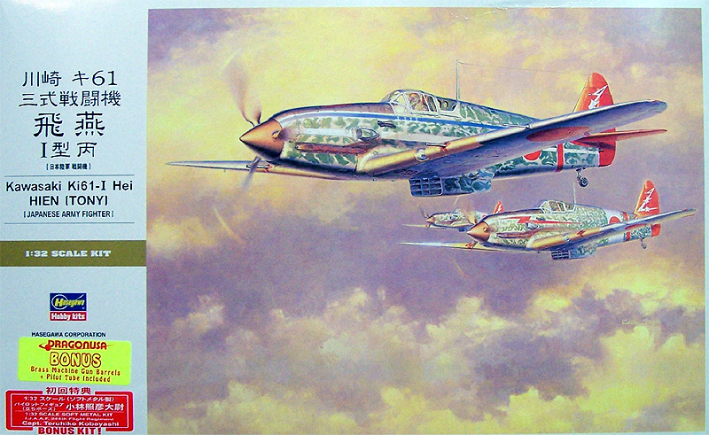
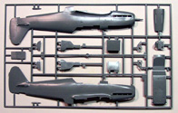
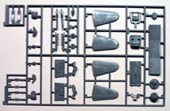
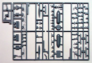
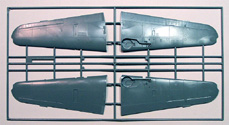
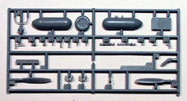
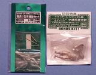
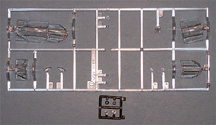
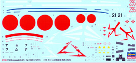

{kind=link}
{kind=link}
{kind=link}
{kind=link}
{kind=link}
{kind=link}
{kind=link}
{kind=link}

Hasegawa 1/32 Ki-61-I Hei Hien (Tony) Special Edition

Kit #8078
MSRP $65.95, $56.37 at Areo-Pacific
Images and text Copyright � 2007 by Matt Swan
Developmental Background
Dr. Richard Vogt is a name familiar to fans of German aircraft, especially those eccentric Blohm and Voss designs but it is also a name that is connected to this fast and powerful Japanese fighter. Prior to the Second World War Dr. Vogt worked as the head designer for the Kawasaki Aircraft Engineering Company and only returned to Germany to work for B&V in 1933. During this period Japanese aircraft design focused on nimble, maneuverable aircraft but Dr. Vogt�s belief in the merit of inline liquid cooled engines as a source of power and speed continued to influence Kawasaki designers for years after he left. In 1940 a Kawasaki engineering team visited Daimler-Benz in Stuttgart and obtained plans for the DB-601A engine being developed for use in the Me-109 which were then built under license for use in a new interceptor being development by Kawasaki.
The Imperial Japanese Army was beginning to feel that a single minded devotion to agility and light weight in a fighter might be mistaken and were beginning to look for a more powerful and heavier armored fighter which Kawasaki was selected to create and this became the Ki-61. The initial interceptor program intended to use the Japanese version of the DB-601A engine ultimately failed but provided plenty of lessons learned that went into the Ki-61 general fighter program. In the spring of 1943 the Ki-61 code named Tony by the Allies had entered service in New Guinea. It was not a completely trouble free introduction as the new water cooled engine had a tendency to overheat in tropical conditions and even though the aircraft�s armament was heavy compared to previous fighter designs it still was not sufficient to bring down the heavily armed Allied bombers.
An improved version of the Ki-61 went into production in January of 1944 featuring two 20mm cannons in the nose and 12.7mm guns in the wings. A few bomber interceptors were also built featuring 30mm cannons in the wings and 12.7mm guns in the fuselage. Later models deleted the retractable tail wheel in favor of a fixed tail gear and increased the length of the fuselage slightly and included wing hard points to handle 500 pound bombs or drop tanks. By time production ceased at the end of the war over 2600 examples of the Ki-61 had been manufactured of all variants.
The Kit
Hasegawa has three slightly different boxings of this kit either already available or soon to be available. The initial boxing was identical to this review sample other than it lacked the metal gun parts and pilot figure, the third boxing is again nearly identical to the review sample only includes wing blisters and new tail gear parts but does not include the brass and white metal gun parts. Each kit boxing includes different decal options. Here we are looking at the boxing referred to as the �special� version. This kit represents the short nose version with 20mm cannons mounted in the wings however the small fairings that should exist under the wing are absent, a slight inaccuracy.
The kit arrives in a solid heavy duty cardboard box that will protect it well in a stash environment and, of course, during shipment. Box art is okay, nothing that really gets me exited but does display the aircraft well. Inside we have five sprues of parts done in a light gray high pressure polystyrene. They show very little flash, just a few minor spots here and there. No sink marks are evident and I did not notice any injector pins that would present a problem. Exterior detail is easily on par with Hasegawa�s recent release of the 1/32 scale P-47 with nice consistent engraved panel lines and subdued rivet detail (yes, it appears that Trumpeter has retired the mad riveter). The design of the wing is somewhat different from the typical kit engineering with there being a central box structure that supports the outer wing panels helping to establish correct dihedral. All control surfaces are molded in place in the neutral position which is accurate for an aircraft on the ground. There is some interior flap detail cast into the inside of the upper wing panel but no provision in the lower wing panel for this to be displayed.
Inside the cockpit we get ample detail material with separate side panels and a pilot figure with option heads. It seems the designers intended this to be built with pilot in place as there is no seatbelt detail on this early style seat. Instruments are represented with raised detail and could benefit with some aftermarket help. We get a single medium sized sprue of clear parts that offer a complete canopy in the closed position and three separate pieces to display the cockpit open. We also get a few marker light lenses, landing light and reflective gun sight. The parts display good clarity and well defined raised frame lines. With the �special� edition we get and white metal standing pilot figure and brass tubing for the guns and pitot tube. We also get two white metal machine gun barrels. If you have the standard edition you can pick up these pieces as aftermarket items to upgrade your kit. Overall we have one hundred forty eight gray plastic pieces, four white metal pieces for the standing pilot, two for machine guns and three brass pieces. We also have thirteen clear parts and a set of four poly caps for a total of one hundred seventy four pieces in the box.




You may click on these small images to view larger pictures



Decals and Instructions
The instructions come as a twelve page A-4 sized pamphlet that opens with a historical background of the aircraft in both English and Japanese. It includes a complete parts map and comprehensive color chart with paints coded by name and by Gunze color codes. There are fourteen exploded view assembly steps that include several color call outs and some version options. Three full pages are devoted to exterior painting instructions and decal placement for three different aircraft. In addition to this are two small sheets; one that covers assembly and painting of the white metal standing figure and the other covering filling some wing panel lines for this kits particular version.

The kit includes a large sheet of decals that appear to be pretty nice. They include the basic markings for the three aircraft depicted in the instructions along with some basic service stencils and warning markings. I have heard other modelers complain about Hasegawa decals but they have never given me any trouble. These appear nicely thin with good color density and print registry. They do include instrument decals if you do not want to paint the finer detail on the Instrument Panel.
Conclusions
1/32 scale modeling is becoming more popular every day and until now the only option for a Ki-61 in this scale was the old Revell kit. Now that was not a bad kit by any means but did not provide much inside the cockpit and lacked some other details. Hasegawa now offers the modeler three choices in a fully new tool Ki-61 kit. The overall engineering of this kit is top-notch, the parts fit together well and the wing box ensures proper dihedral. Instructions are clear and concise, decals appear adequate and the addition of brass and white metal parts improves the kit quality. The only thing lacking from this kit is seatbelts. As this kit is still very new to the market there is little available on the aftermarket however Eduard and Moskit are jumping right in with interior, exterior and exhaust packages under development already. Eduard already makes some 1/32 IJA seatbelts that are useable with this kit. Overall I give this a very good recommendation and suggest you look into picking one up.
Review sample provided by